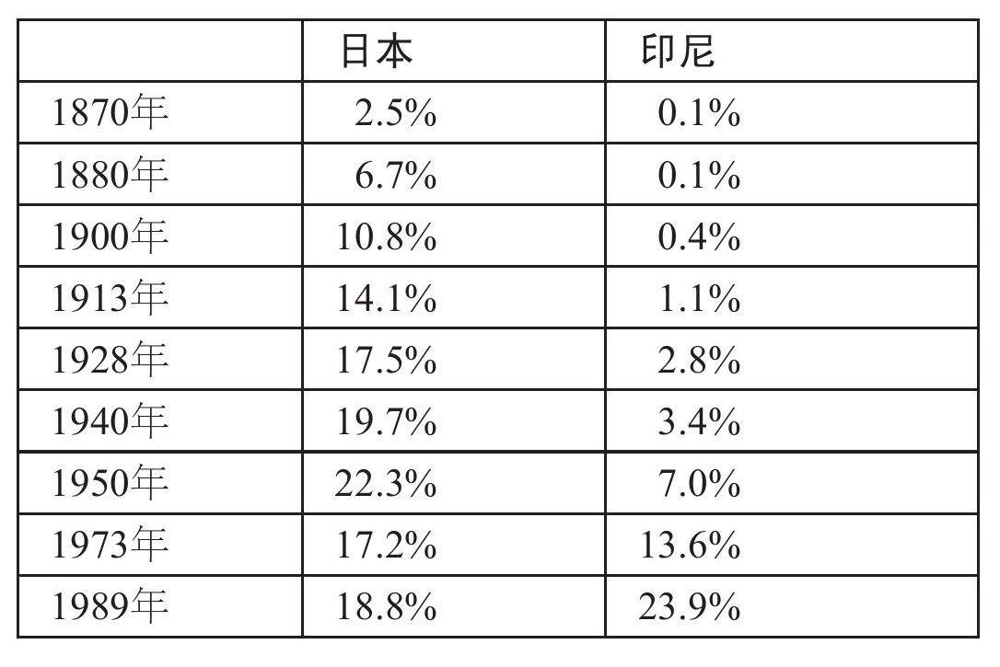

到1850年时，欧洲和北美已经领先于世界其他地区。贫困国家如何追赶成了新的问题。殖民地对此无能为力，因为帝国势力限制了它们的发展。不过已经取得独立的国家可以采用标准模式（建设铁路、统一关税、建立银行和发展教育），这一模式在北美和西欧地区都取得了成功。然而，随着时间的推移，这一策略已不再像之前那样有效了。
长期以来，俄国一直是欧洲最落后的地区。彼得一世（1672年—1725年）试图将俄国改造成现代化的西方强国。他建造了新的港口圣彼得堡，并且建立了多家以军工生产为主的工厂。然而，俄国并未因此赶上西方。在克里米亚战争（1853年—1856年）中，俄国被英国和法国击败，从中可以清楚地看到当时俄国的落后状况。现代化成为迫切的目标，沙皇亚历山大二世因此废除了农奴制。改革派希望这一举措能够产生自由劳动力和私有财产，从而推动经济发展。但事实上，农奴解放并没有迅速带来转变。
在解放农奴之后，俄国政府采取了经过微调的标准发展模式。首先，俄国政府通过规模庞大的铁路建设项目来创建全国性市场。到1913年，已经开通的铁路里程达到7.1万公里，将俄国与全球经济联系在了一起。
其次，俄国政府通过关税来建立本国工业。到1910年，俄国的生铁冶炼能力达到400万吨/年，虽然没有赶上由美国、德国和英国组成的第一集团，但在第二集团中已经处于领先位置。俄国还建立起了重要的工程业。此外，俄国还对纺织品征收高关税，对原棉征收低关税，以此来促进轻工业的发展。结果，在如今的乌兹别克斯坦地区，棉花种植面积大幅增加。在20世纪初期，俄国纺织厂的棉花加工量几乎与德国的相等。第三，经济政策上的最大变革在于金融业。俄国的私有银行过于弱小，无法起到同类银行在比利时或德国所起到的作用。因此，俄国转而依赖外国资本。他们通过在国外出售证券来募集铁路建设资金，外国直接投资成为将先进科技引入俄国的主要手段。然而，这些工厂都是按照西欧标准建造的，并没有根据俄国自身的经济状况加以调整。结果就是，当地的生产成本高于西欧的。第四，从19世纪60年代起，教育范围不断扩大。到一战时，将近一半的成年人具备读写能力。体力劳动者中，具备读写能力的人收入高于不具备读写能力的人，因此对许多人来说，学校教育具有吸引力。
标准模式（调整后的）将俄国重工业占国内生产总值的比重从1885年的2%提高到1913年的8%，但农业依然是规模最大的产业（比重从59%下降到51%）。在这一时期，随着国际市场上小麦价格的提升，俄国的农业产量翻了一番，国内生产总值的增长绝大部分源自农业生产。沙皇治下的经济增长主要源自农业繁荣，加上关税保护所带来的若干工业化发展。一战之后，随着国际市场上小麦价格暴跌，这部分增长很可能就此消失。俄国需要一种新的经济模式来赶超西方。
有一项指标能说明标准模式在俄国产生的影响很有限，那就是劳动力市场。虽然国内生产总值出现增长，但劳动力需求并没有产生足够的增长，无法实现充分就业，因此工资停留在最低生活水平。经济增长所产生的额外收入分为两部分：一部分作为利润被产业所有者占有，另一部分作为地租被土地所有者占有。这些因素最终引发了社会冲突。不平等的发展模式导致了反抗，先是1905年的起义，随后是1917年更大规模的革命。标准模式没能改变俄国，反而导致了自身的消亡。
日本是个特别有趣的例子，因为它是第一个赶上西方世界的亚洲国家。日本历史可以划分为四个阶段：德川时期（1603年—1868年），当时日本处于德川幕府的统治之下；明治时期（1868年—1905年），此时权力回到明治天皇手中，日本开始推行经济现代化；帝国主义时期（1905年—1940年），日本建立起重工业；最后，高速发展时期（1950年—1990年），日本赶上西方强国。
日本取得成功的源头在德川时期，虽然当时有许多制度不利于经济发展。整个社会分为几个阶层：武士、农民、手工业者和商人。整个国家分成几百个领地，由被称为“大名”的地方诸侯治理。这些领地可能被国家没收，因此在社会最高层面上，私有产权得不到保障——就像是伊丽莎白时代的英格兰。政府对于国际贸易和联系施加了严格限制。只有来自中国、朝鲜和荷兰的船只被允许进入日本，并且荷兰人被限于在长崎的一小块殖民地范围内活动。
德川时期的日本在科技方面取得了进步，但进步的特点与英国的正好相反。由于东亚地区工资较低，日本人发明了新的技术，这些技术可以雇用更多的劳动力，从而提高土地、资本和材料的生产效率。比如，劳动力被用于建设水利工程，以提高作物的产量。稻米的新品种（比如杂草稻）开始种植，同时对水源的掌控使得农民可以种植第二种作物，比如小麦、棉花、甘蔗、草莓或油菜籽。随着犁具和役畜替代了原始的锄头，农民在每公顷土地上花费的劳动时间更长，投入的资本更少。
产品制造过程的生产效率也有所提高。各个领地都努力发展工业，支持研究，意图提高生产效率，因为更高的产量就意味着更多的税收。以丝绸为例，早期曾有人尝试参照英国人的模式来使用机械（比如，受钟表和自动机械的启发，采用齿轮和传动带），但最后他们终止了这一做法，因为成本太高。之后，人们尝试提高蚕的培育率。通过选择性培育和温度控制，人们得以缩短蚕的成熟时间，并且将每只蚕茧的出丝率提高了1/4。在采矿业中，人们对机械化的排水系统有所了解，但没有使用，而是雇用大批劳动者来完成这项工作。同样，炼铁业雇用了大量劳动力，以便从矿石中提炼出最大数量的金属。唯一例外的是日本米酒。人们建立起了资本密集型的、使用水力的工厂，但之所以这样做是因为政府限制生产，规定了酿酒厂的工作时间。这一限制导致工厂在设计时不得不选用高产量模式。
德川时期的经济发展带来了不均衡的繁荣格局。在17世纪，日本的人口和稻米生产都出现了增长，但劳动者的工资依旧停留在基本生活水平。在德川时期的晚期和明治时期的早期，普通民众每天摄入的热量约为1，800卡路里。大多数卡路里和蛋白质来自稻米、土豆和豆类，而不是肉类和鱼。因此，日本人普遍较矮：男性平均身高为157厘米，女性为146厘米。
不过，许多人过着更为富裕的生活。大约15%的日本人住在城市里。江户（即现在的东京）的人口达到100万，大阪和京都各40万，位列世界上人口最多的城市。日本人的人均寿命不断提高。休闲活动增多，农民享受“休闲假日”，在国内四处游玩。就农业社会而言，日本的入学率非常高。1868年，43%的男孩和10%的女孩入学就读，学习阅读和算术。超过一半的成人具备读写能力。以求知和消遣为目的的阅读行为十分普遍。对于大多数人来说，书籍太贵买不起，但他们可以从书店租借图书。1808年，仅江户一地就有656家租书店，为大约10万户居民（差不多是当地人口的一半）提供图书。教育普及率较高，很可能是因为日本经济的商业化程度较高，这为日后的腾飞打下了基础。
德川时期的日本在工程和管理方面成就斐然，从位于长崎的首家钢铁铸造厂就可以看出。促进发展的主要动力是军事需要。1808年，“菲顿号”进入长崎港，意图攻击荷兰人的运输船只。“菲顿号”威胁说，如果不满足他们的条件，就要轰炸港口。当时日本人缺少用于防卫的火炮，因为他们没有可以铸造炮管的熔炉。后来成为长崎统治者的锅岛直正对西方科学抱有极大热情，他建立起一支团队来创建火炮铸造厂。团队成员既有专家，也有精通铸铁的工匠。他们翻译了一本描述莱顿市铸造厂的荷兰语图书，照搬对方的做法。1850年，他们成功建造了一台反射炉。三年后，他们开始铸造火炮。1854年，长崎团队从英国引进了当时最先进的后膛装填式阿姆斯特朗火炮，并加以仿制。到1868年时，日本已经有11台熔炉用于铸铁。
明治维新
1839年，英国向中国发起攻击，意图迫使中国放开对鸦片进口的限制，因为鸦片是东印度公司利润最高的产品之一。1842年中国战败，贩卖毒品的帝国主义如愿以偿。日本会是下一个被征服的对象吗？答案似乎是肯定的：美国海军准将马修·佩里于1853年率领四艘军舰抵达日本，他要求日本解除对外贸活动的限制。由于缺少现代化的海军力量，日本被迫同意，随后与美国、英国、法国和俄国签订条约。日本迫切需要一支具有足够实力的军队。德川幕府采取了一些措施来加强日本的安全，但在许多人看来，这些措施远远不够，并且来得太晚。
1867年，明治天皇登基。改革派发动了一场政变，末代德川将军被迫放弃权力。改革派的口号是“富国强兵”。
新政权采取了全面的改革措施。所有封建领地都被“交给”天皇，全国190万武士的收入变成了政府债券。社会的四个阶层被废除，任何人都可以自由选择职业。农民的土地所有权得到确认，现代产权形式得以创立。封建时期的赋税改为向国家政府缴纳的土地税。19世纪70年代，这项税收占国家收入的绝大部分。1873年，日本引入普遍兵役制，建立起一支西式军队。这进一步侵蚀了武士阶层的特权，之前只有武士才能携带武器。1890年，日本施行首部宪法，以普鲁士为模板，建立君主立宪制。
从一个小问题可以看出明治时期日本社会的剧烈变革，那就是时间的测算。过去日本的计时器将从日出到日落的时间划分为6个时辰，然后将日落到第二天日出的时间划分为另外6个时辰。因此，白天和晚上的时辰并不相等。而且，一年之中，每个时辰的确切时间也在不断变化。德川时期的钟表匠凭借着聪明才智，将西方的机械钟改造成适合日本时辰的计时器。1873年，日本的第一条铁路竣工，明治政府遇到了麻烦：他们必须发布铁路时刻表。政府并没有采用复杂的时刻表，列出一年之内不断变化的火车出发和到站的时间，而是废除了传统的时辰计时法，代之以西方的24小时计时法。现代交通需要现代时间。
明治时期的经济发展
明治政府本想借鉴西欧和北美取得成功的标准模式来发展经济，但只引入了其中两项政策。第一项是通过废除领地间的关税建立起全国性市场，并且修建铁路网。第二项是普及教育。1872年，日本政府开始推行义务制小学教育。到1900年，90%的学龄儿童入学就读。政府还创办了一些中学和大学，但数量有限，竞争非常激烈。成千上万的日本人前往国外学习。因此，相比其他贫困国家，日本发展教育的时间要早得多。表6将日本与印尼作了比较，后者可以作为亚洲和非洲大多数国家的代表。到19世纪晚期，在校学习的日本人占到总人口的相当大的比重（10.8%）；到二战时，这一比重更是达到了现代水平（19.7%）。印尼的情况正好相反，比日本落后了好几代。大众教育是日本成功采用现代技术的重要原因。
标准发展模式的其他部分——投资银行和保护性关税——推行的难度更大。德川时期的日本没有任何机构能起到现代银行的作用。明治时期从一开始就建立了银行，但银行体系很混乱。日本花了五十年时间才参照德国模式发展出一套银行体系。在明治时期，由于银行业尚未完善，风险投资的功能由国家来完成。
表6 在校学习人数占总人口的比重

1866年西方列强迫使日本签订条约，将最高关税定为5%，因此日本不可能利用关税来保护本国的工业发展。政府转而采取“针对性工业政策”来直接干预经济。其中扮演最重要角色的是内务省和产业省，它们负责引进现代科技。19世纪七八十年代，产业省建立起日本的铁路网和电报通信体系。起初由外国技师来指导这些项目，之后日本政府在大阪建立起一所学校，专门培养日本工程师。在这批人员学成毕业后，日本迅速摆脱了对外国技师的依赖。日本人之所以亲自掌管这些项目，其中一个原因就是要确保采购政策有利于日本工业的发展。例如，日本的制陶企业接到了政府订单，为电报线路制造绝缘材料。日本的工业陶瓷产业就此诞生。
19世纪七八十年代，内务省和产业省制定政策的基本前提是日本经济无法按照既定速度来引进现代技术，因此政府必须出面扮演企业家的角色。当时日本政府建立了国有的矿场和工厂，使用先进的进口机械，但大多数尝试在商业上都失败了。例如，富冈缫丝厂于1872年建立，使用法国机械和蒸汽动力，但一直亏本。19世纪80年代，日本政府卖掉了大多数国有产业，寄望于各家企业能够在政府设置的框架内自行决定经营事宜。日本企业最终解决了进口技术的难题，办法是通过技术改造，使之适应日本国情。
日本还面临着一个难题，并且随着时间的推移，这个问题更加严重：现代技术对于机械和工厂的具体规格有着严格要求，但这些规格专为西方企业设计，针对的是西方国家的实际情况。到19世纪晚期，西方国家的工资水平远高于日本，因此西方的技术设计使用了大量资本和原材料以节省劳动力。然而这一思路并不适合日本，最终导致了成本过高。一些国家继续使用不适合本国国情的西方技术，但日本人采取了更富创造性的应对措施：他们改进了西方技术，使之在低工资水平的经济体中也能带来收益。
以早期的缫丝技术为例。就在富冈缫丝厂亏本经营的同时，小野家族在东京的筑地地区建立起一家工厂，同样使用源自欧洲的机械设备。但他们的机器由木头制成，而不是通常用的金属，并且他们使用人力推动曲柄来产生动力，而不是使用蒸汽机。通过此类方式对西方技术所做的改进在日本被称为“诹访法”。这种技术很适合日本，因为它减少了昂贵的资本，代之以大量廉价的劳动力。
棉纺织技术同样也经历了转变。起初日本企业试图用骡机来纺纱，但并不成功。更受欢迎的是卧云辰致发明的废纱机。这种废纱机可以由当地的木匠生产，成本低廉（因而节省资本），同时它所生产的纱线质量并不亚于与之竞争的手纺车。废纱机并不是明治政府的高级项目，但它得到了卧云辰致所在地的生产发展协会的支持。
与印度的对比更有说服力。19世纪70年代，棉纺织业在孟买得到迅速发展，当地人使用英国骡机，并且按照英国模式管理工厂。他们没有进行系统性的尝试来减少印度纺织业的资本投入。然而，日本人进行了此类尝试。其中一个基本步骤就是将工厂的运营时间从每天一个班次（11小时）改为两个班次（各11小时）轮换，前者是英国和印度的通常做法。日本人的变革将每小时工作分摊的资本减少了一半。从19世纪90年代起，环锭细纱机取代了骡机。这些技术革新都增加了劳动力相对于资本的比重，削减了成本。到了20世纪，日本已经成为成本较低的棉纺织品生产国，不仅超过了英国，就连印度和中国也不是它的对手。
农业领域也进行了技术革新。19世纪70年代，日本尝试使用美国的农业机械，但并不成功，因为需要太多的资本投入。更为成功的做法是增加土地的产量，哪怕需要为此投入更多的劳动力。1877年，“神力”水稻在大阪附近培育成功。在施加肥料并精耕细作的情况下，这种水稻产量极高。在农业省的支持下，有经验的农民组织将这种做法传播到日本其他地区。在明治时期，日本的农业产量稳步提升，对于经济发展做出了重要贡献——前提是技术革新以增加产量为目的，因为土地是农业生产中稀缺而又昂贵的资源。
帝国时期，1905年—1940年
日本社会在明治时期经历了巨大变革，但经济结构的变化速度很慢。传统产业，比如茶叶、丝绸和棉花，依然占据主导地位。这些产品出口换来的外汇用于购买进口机械和原材料。
1905年至1940年，工业发展速度加快，并且性质发生变化。制造业占国内生产总值的比重从1910年的20%上升到1938年的35%。就在这一时期，日本建立了冶金、工程和化学工业，这些部门在二战之后日本经济的增长过程中发挥了主导作用。同时在这些部门中也涌现了一批知名企业。
就在工业发展取得进步的同时，日本开始全面执行标准发展模式。1894年和1911年，日本重新取得本国关税的自主权，它立即提高税率以保护本国工业。到20世纪20年代，日本的银行体系完全成熟，足以为工业发展提供资金。此外，日本保留了针对性的工业政策。事实证明，各种政策工具的综合使用对于促进重工业的发展非常有效。
1905年，日本迈出了第一步，出于战略目的，它建立了八幡钢铁厂。钢铁厂归属国有，在最终赢利之前一直接受政府补贴。第一次世界大战对于日本经济起到了推动作用，因为当时欧洲的进口渠道被阻断。战后，日本军方与私营企业进行联合研究，通过政府采购促进了一些重点工业（比如汽车、卡车和飞机）的发展。大型企业以及为它们提供资金的银行都归属于几家控股财团。这些财团协调生产，并且将资金投入工业发展。
财团意图通过增加储蓄率和投资金额来解决日本的资金短缺难题，同时下属企业的管理层也采取适合日本国情的技术来应对生产要素的价格难题。美国企业在高工资的环境中运营，因而建立了高度机械化的装配线生产体系，以求节约劳动力。日本企业则正好相反，它们力求节约原材料和资本投入。日本最知名的产品之一是三菱公司生产的零式战斗机。这种飞机在4，000米高空的最高时速达到500公里，但三菱公司并不是通过增大发动机马力而是通过减轻重量来做到这一点的。20世纪30年代，日本企业采取的一种经营策略是“零库存”生产。它们并不是事先生产零部件并储存，因为那样需要资本投入，它们在需要的时候才生产零部件。事实证明，“零库存”生产是一种非常有效的策略，如今世界各地，不论当地的资本价格是高是低，都在使用这种经营方式。
不同于沙皇治下的俄国，也不同于同时期的墨西哥，日本并没有把外国投资作为引进西方技术的重要渠道。日本企业建立了自己的研发部门来仿制并改进西方技术，使之适应日本国情。企业得到政府的大力支持。1914年，由于无法从德国进口涡轮发电机，政府给了日立公司一份合约，为水力发电项目生产一台1万马力的涡轮机。之前日立公司生产的最大动力的涡轮机只有100马力，因此在完成新项目的过程中，有许多技术需要学习，日立公司的工程建设能力得到了提升。
在实施标准发展模式的过程中，日本有得有失。一方面，日本建立起了具备先进工业的都市型社会。人均国内生产总值从1870年的737美元提高到1940年的2，874美元。考虑到当时经济滞胀让第三世界的大多数国家陷入困境，日本的成就就显得非常突出。另一方面，人均收入的增长速度（每年2%）并不快，只比美国（每年1.5%）略快一些。如果在1950年之后，日本的经济发展依然维持在这样的速度，那么日本要花费327年才能赶上美国。那样的速度显然不够快。
与俄国和墨西哥一样，从劳动力市场的缺陷中也可以看出日本经济发展缓慢。大型企业支付高额工资，但在农业和小规模工业生产中，工资水平很低，因为劳动力需求不高。这些经济部门依然依靠手工操作或简单机械进行生产。在现代经济部门和传统经济部门之间存在着共生关系：如果现代生产过程的某个步骤能够通过小规模的手工生产以最低成本来完成，那么这道工序就会被转包给小企业。
拉丁美洲最新尝试标准模式。就在拉丁美洲南部的一些国家融入世界经济体系的同时，标准模式也开始普及。
墨西哥、安第斯山脉地区、巴西和加勒比海地区自从16世纪以来就是世界经济体系的组成部分，但拉丁美洲南部距离欧洲太远，难以开展贸易。1860年之后，蒸汽船的出现使得一些产品的出口有利可图，比如阿根廷和乌拉圭的小麦以及太平洋沿岸地区的鸟粪（用作肥料）和铜。1877年，肉类也加入了出口产品的行列，当时第一艘配有冷库的船只“冷藏号”装载冰冻的羊肉从布宜诺斯艾利斯出发前往法国的鲁昂。出口开始繁荣，这一地区吸引了来自欧洲的移民和投资。到1900年，拉丁美洲南部地区已经是世界上最富裕的地区之一。继墨西哥之后，阿根廷也开始发展制造业。
一方面，许多拉美国家面积太小，难以发展工业，因此它们继续出口初级产品，进口制成品——这些国家依然很穷。另一方面，经济规模较大的国家在19世纪晚期开始采用标准发展模式，并一直延续到20世纪80年代，当时这种做法被称为“进口替代型工业化”。首先，截至1913年，阿根廷、巴西、墨西哥和智利已经铺设了9万公里铁路。其次，关税保护了纺织和钢铁等产业。第三，部分国家在采取俄国模式之后，从国外募集资本。第四，教育没能普及，这是重大不足。阿根廷是个例外，早在1884年就开始施行免费的义务教育。因此到1900年时，阿根廷是拉丁美洲具备读写能力的人口比率最高的国家（其次是智利），超过一半的成年人具备读写能力。与之相比，墨西哥、委内瑞拉和巴西只有1/4的成年人具备读写能力。
20世纪二三十年代，在关税的保护下，制造业开始加速发展。当时拉丁美洲的农产品只能以低价出口，这成为政府发展工业的原因之一。联合国拉丁美洲经济委员会在阿根廷经济学家劳尔·普雷维什的领导下，将上述看法变成了正式声明。《拉丁美洲经济发展及其主要问题》（1950年）提出，和进口的制造品价格相比，拉丁美洲出口的初级产品价格正在下跌，因此建议政府出面推动工业发展，以改变这一趋势。这就是所谓的“依赖理论”，在政治上这一理论产生了巨大影响，虽然它的观点值得商榷。不妨来看本书所举的例子。棕榈油和可可的历史发展符合依赖理论，因为自从19世纪中期以来，它们相对于棉布的价格是下跌的（参见图17和图18）。然而，19世纪在印度，原棉相对于布料的价格是上升的，这导致了去工业化（参见图12和图13）。
在依赖理论的影响下，拉美各国普遍接受了标准发展模式。教育普及最终得以实现。各国建立发展银行为经济发展提供资金，同时外国投资成为重要手段，一方面为工业提供资金支持，另一方面引入了国外的先进技术。各国还采取关税及政府控制的手段来促进各种现代产业的发展。制造业产量猛增，同时城市化发展迅速。从1950年到1980年，人均收入翻了一倍多。然而，外债也随之增长，到了20世纪80年代早期，由于利率提高，一些国家已经付不起利息。1982年，由于墨西哥无力还债，西方银行收回了贷款，拉丁美洲就此陷入衰退。标准模式到达了极限。
关税政策引导下的工业化没能取得成功，这也反映出了更深层次的原因，比如技术的演变。富裕国家与贫困国家之间的工资差距进一步拉大，因此在20世纪50年代的时候，新的资本高度密集型技术相比19世纪50年代的传统技术更加不适合贫困国家。此外，出现了一个新的问题。20世纪中期的新技术不仅要求很高的资本/劳动力比率，同时也需要足够大的工厂规模。贫困国家的市场规模很小，难以满足这些条件。
汽车产业是一个突出的例子。大多数拉美国家努力发展汽车生产，但它们的市场规模太小，无法实现有效经营。在20世纪60年代，车辆装配厂的最小有效规模必须达到年产20万辆。发动机和传输装置的最小有效规模接近年产100万台，而板料冲压设备在使用年限之内可以生产400万个部件。只有七家公司（通用、福特、克莱斯勒、雷诺、大众、菲亚特和丰田）年产超过100万辆，并且能够在发动机、传输装置和装配等环节都达到最低有效规模。（冲压环节要想达到有效运作，每隔几年就必须更换车身设计。）规模较小的公司要负担更高的成本。
拉丁美洲的汽车市场规模更小。20世纪50年代，阿根廷每年售出的新车数量约为5万辆。1959年颁布的《车辆法令》要求售出的车辆零部件国产化率必须达到90%。从那时起一直到1965年，每年汽车产量的增幅为24%。1965年的汽车产量为19.5万辆，汽车产业占到经济总量的10%。就产量增长幅度而言，“进口替代型工业化”取得了巨大成功，但整个工业规模实在太小，无法实现大规模的有效生产。更为糟糕的是，原本就不大的市场被十三家公司瓜分，其中最大的公司年产量不过5.7万辆。结果就是，在阿根廷生产一辆汽车的成本是美国的2.5倍。以这样的工业结构，阿根廷在国际市场上永远无法与强国竞争，这一部门的落后状况拖累了国民经济的整体效率。由于钢铁、石油化工和其他工业部门有着类似的情况，“进口替代型工业化”造成了劳动者人均国内生产总值的下降，因而也影响了生活水平。
20世纪的情况与19世纪的形成了鲜明反差。在19世纪，规模并没有产生重大影响。在1850年左右，一家典型的棉纺织厂拥有2，000个纺锤，每年可以加工50吨纱线。美国每年大约消费10万吨纱线，因此可以容纳2，000家达到最小有效规模的纺织厂。其他的现代工业部门同样如此：一台高炉每年产量为0.5万吨，而美国的总消费量大约为80万吨，或者说，是最小有效规模的160倍。一家铁轨生产厂每年产量为1.5万吨，而美国每年铺设的总量为40万吨（只多出27倍！）。19世纪，美国和欧洲的高额关税提高了消费者支付的价格，但这些地区并没有效率低下的工业结构，因而不会给国民经济带来负担。标准模式在北美行之有效，在南美却行不通，根本原因就在于此。
在沙皇时代的俄国、日本和拉丁美洲，标准模式在一定程度上促进了经济的发展，但增长速度还不足以使它们赶上西方列强。发达国家的人均国内生产总值以每年大约2%的速度增长，贫困国家至少要达到同样的增长速度才能不被拉开差距，如果要想在短期内赶上发达国家，就必须取得更快的发展速度。在采用标准模式的情况下，沙皇时代的俄国、日本和拉丁美洲无法做到这一点。结果就是，劳动力需求的缓慢增长跟不上人口的增长。这样一来，沙皇时代的俄国、日本和拉丁美洲出现了明显的贫富不均现象，同时政治格局也不稳定，这影响了它们的经济发展。第二次世界大战之前，日本有许多人群——农业和小型工业中的劳动者，还有女性——都没能享受到经济增长的好处。随着时间的推移，这些问题日益严重，因为有效生产的最小规模在增长，同时富裕国家的资本/劳动力比率变得更高。哪怕20世纪80年代早期没有出现金融危机，标准模式也将走到尽头。那么替代它的又将是哪种发展模式呢？